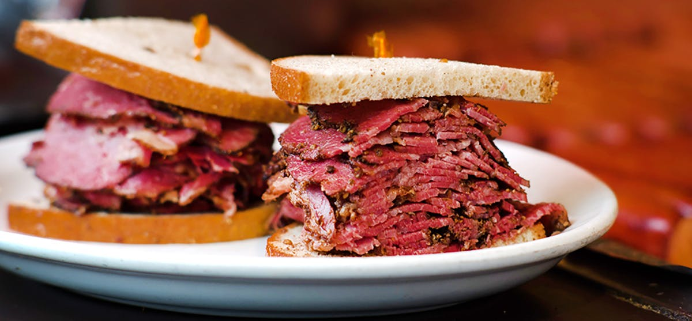
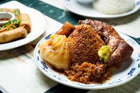
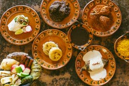
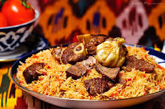

Liebmans Deli:
 Jewish deli in its most nostalgic form can be found at Liebman’s in . Riverdale, a small and diner-like institution that’s been serving up kosher pastrami, corned beef, and hot dogs made in-house since 1958. It doesn’t look like the dining room or clientele has changed since then, with a retro feel from faded sea-green booths and gruff but pleasant servers. Any of the overstuffed sandwiches makes an ideal meal, preferably preceded by matzo ball soup and accompanied by the chip-like fries and gravy. There is absolutely nothing modern about Liebman’s, and that’s the best thing about it.
Africa Kine:
 Africa Kine has been open in NYC since 1996, run in various locations by founders Kine and Samba Niang, who grew up in Dakar. It moved north a few years ago into a more compact space, with a menu paradoxically larger than the original. Included are such Senegalese mainstays as thiebu djen (stuffed fish and vegetables over rice), mafe (lamb or chicken in a peanut sauce), and yassa (chicken or fish in a lemon and onion confit), mainly available at lunch. At dinner, expect shrimp brochettes, roast leg of lamb, grilled lamb chops, and baked fish.
La Morada:
 Mott Haven cafe La Morada is one of the small number of New York restaurants specializing in Oaxacan cuisine, and the family operation is best known for the variety of difficult-to-prepare moles. Chef (and matriarch) Natalia Mendez offers six total, including mole verde (with green chiles and jalapeños), mole pipian (with pumpkin seeds), and the much spicier mole Oaxaqueño, which contains seven kinds of dry peppers. But other menu items pull their weight, too, like hand-patted sopes or a crisp tlayuda loaded with toppings. The petite space also doubles as a community center; the family members are immigration activists.
Farida:
 There’s nothing in Manhattan quite like Farida, which appeared on Ninth Avenue in Hell’s Kitchen south of the Port Authority. It focuses on Central Asian food from Samarkand, Uzbekistan, via the husband-and-wife team of Farida Gabbassova-Ricciardelli and Umitjon Kamolov, the latter also serving as chef. The dumplings called manti are more delicate than usual, with a filling of lamb or pumpkin, the plov (rice pilaf with lamb) simplified, unfussy, and available anytime without preordering. As is the case with most great such restaurants, the kebabs cooked over charcoal are unforgettable: smoky, greasy, and meaty. Get the lamb rib or chicken wing for maximum enjoyment in this compact and pleasantly decorated space.